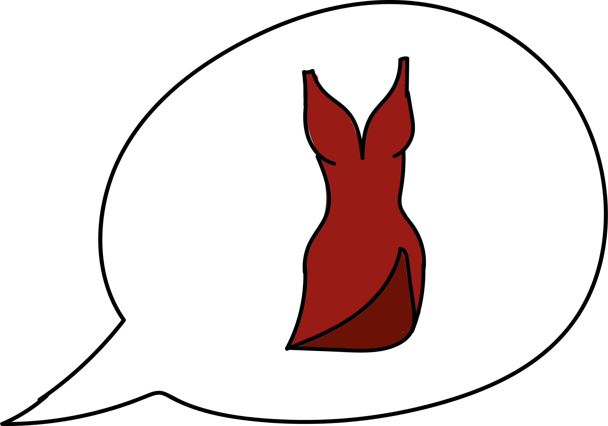

Mijn naam is Nine Revius, student aan de hogeschool van Amsterdam.
Momenteel zit ik in mijn tweede jaar van de studie communication & multimedia design.
Mijn passie is altijd tekenen geweest, hier haar ik ontzettend veel energie uit.
Sinds ik deze studie ben gestart werk ik graag met Adobe Illustrator en Adobe After Effects.
Als kind heb ik veel getekend in Photoshop als hobby en in mijn vrije tijd schilder ik ook graag.
Sinds ik mijn huidige opleiding volg ben ik verliefd geworden op digital design en ben ik ook
ontzettend leergierig om hier beter in te worden. Naast digital design ben ik ook mijn vaardigheden
omtrent coderen aan het beoefenen, zo heb ik bijvoorbeeld deze webpagina zelf gecodeerd met HTML & CSS.
Schoolprojecten
Sinds ik mijn opleiding ben gestart heb ik ontzettend veel nieuwe vaardigheden geleerd.
Zo vind ik animeren
erg interessant en haal ik hier mijn voldoening uit. Afgelopen jaar heb ik mijn aller eerste animatie video
gemaakt.
Het passie project was een project omtrent je eigen interesses vertalen naar een vaardigheid die je wenst
te leren. Voor dit project heb ik gekozen om te leren animeren met als thema afvallen.
Zo heb ik deze twee interesses met elkaar te weten combineren in het project.
Mijn aller eerste video heeft ook een aardig proces doorgelopen wat ik iedere maand heb bijgehouden.
Uiteindelijk zijn de onderstaande video's het resultaat van dit project. De onderstaande versies beschikken
over Nederlands gesproken en Engelstalig.
Mocht u nog interesse hebben in het procesverslag?
Klikt u dan gerust op de onderstaande button.
Procesverslag
Video's van het passie project
Maatschappij & interactie illustraties
Voor maatschappij & interactie konden eventuele extra punten behaald worden door middel van een voorstel.
Hier heb ik toen het voorstel gedaan om te illustreren. De illustraties zijn gemaakt in Adobe Illustrator.
Hieronder zijn 3 resultaten van deze opdracht weergeven.
Gemaakte iconen
De onderstaande afbeeldingen zijn een aantal iconen die ik gedurende het
eerste jaar heb gemaakt tijdens mijn studie. Dit verschilt per vak uiteraard
zo zijn de voedingsicoontjes ontwikkeld voor een applicatie en de overige iconen
voor verslagen.

Digitale Tekeningen
Sinds ik mijn opleiding ben gestart heb ik ontzettend veel nieuwe vaardigheden geleerd. Zo
vind ik animeren
Ja ja bla bla tekenen is leuk
Heel veel bla...
Schilderijen
Sinds ik mijn opleiding ben gestart heb ik ontzettend veel nieuwe vaardigheden geleerd. Zo
vind ik animeren
Ja ja bla bla tekenen is leuk